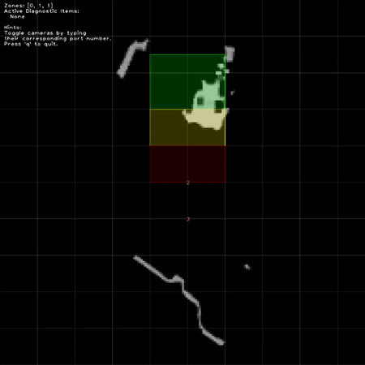

How to switch active cameras
Note
The support for active camera switching within the ODS application was introduced for firmware version 1.1.X., alleviating the need to switch between instances of ODS as implemented in prior firmware.
ODS running on the OVP801 or M04239 is currently limited to 3 cameras running simultaneously. This means that many vehicles will need to switch active cameras to move in all directions and still detect obstacles on the floor or above their safety LiDARs. Additionally, selective deactivation of cameras reduces average power requirements of the system.
Demonstration
Try ods_demo.py for an interactive visualization of the camera switching. This will show active diagnostic messages and zone activation as well.

Sample Configuration
The activePorts parameter can be updated while the application is in state “CONF” or “RUN” or during the call to switch between states. Note that the “ports” parameter should not be changed while ODS is in “RUN,” but is included below to highlight the difference.
{
"applications": {
"instances": {
"app0": {
"configuration": {
"activePorts": ["port0"],
"ports" : ["port0", "port1", "port2", "port3", "port6"],
"state": "RUN"
}
}
}
}
}
Warning
The set() function will throw an exception if the number of 3D ports specified in activePorts exceeds the maxNumSimultaneousCameras specified when the application was initialized or the 3D port was not present in the ports parameter of the application. The default maximum number of cameras is set to 2 as a notice to developers to be aware of resource limitations during use of ODS.
Changing views and zones
For implementations of the zones feature, it will be necessary to switch the active zones in addition to the active cameras.
In this case, the maxHeight, zoneConfigID, and zoneCoordinates are all changed in the same call as the activePorts call.
Update the app with a new set of active cameras and an updated set of zones:
{
"applications": {
"instances": {
"app0": {
"configuration": {
"activePorts": ["port1", "port2"],
"grid": {
"maxHeight": 1.4,
},
"zones": {
"zoneConfigID": 20,
"zoneCoordinates": [
[[0.0,-1],[1.0,-1],[1.0,1],[0.0,1]],
[[1.0,-1],[2.0,-1],[2.0,1],[1.0,1]],
[[2.0,-1],[3.0,-1],[3.0,1],[2.0,1]],
]
},
}
}
}
}
}